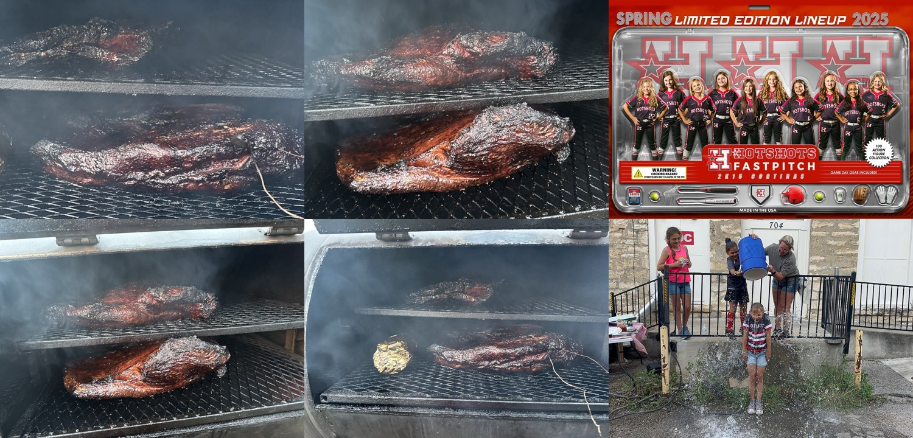

Executive Summary
Working finding: fundraising alone appears sufficient to cover known practice and tournament costs. Additional monthly dues create an estimated unreconciled balance requiring full ledger, receipt, Venmo, Chase, and nonprofit account review.
Behavioral Pattern Analysis
Questioning whether a player would remain if Brian exited suggests the removal decision may have been forming before transparent parent communication.
Multiple reasons were introduced across calls: competition level, alcohol claim, parent complaints, negativity, player-specific criticism, and executive involvement.
References to an executive and generalized parent concerns can function as authority shielding and consensus building unless documented and verified.
Fundraiser Media Collage

Visual summary of available fundraiser/media artifacts. Source images are organized in the fundraiser gallery.